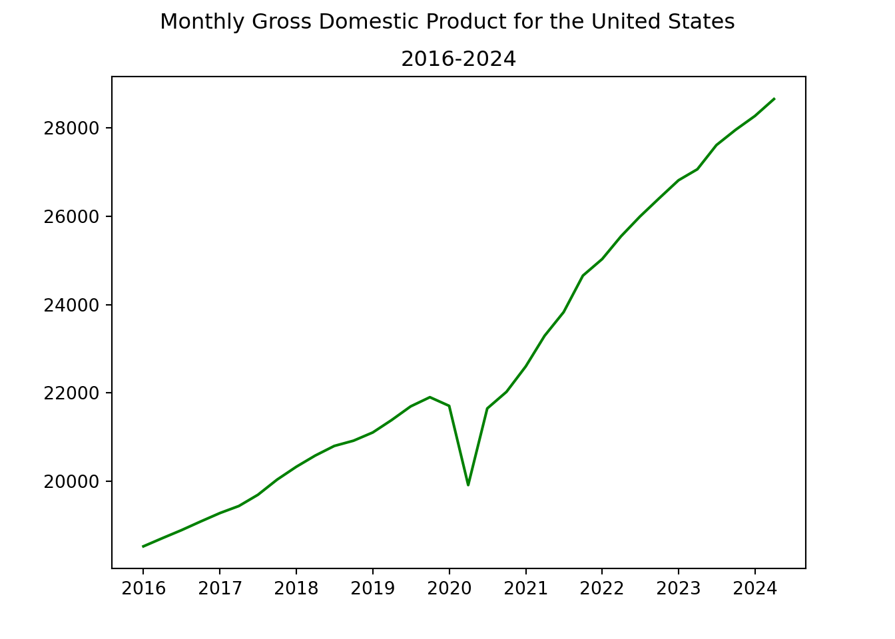
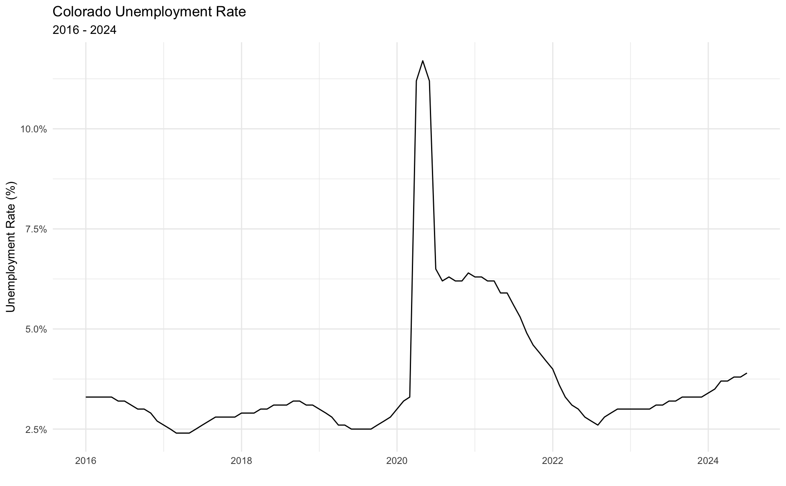
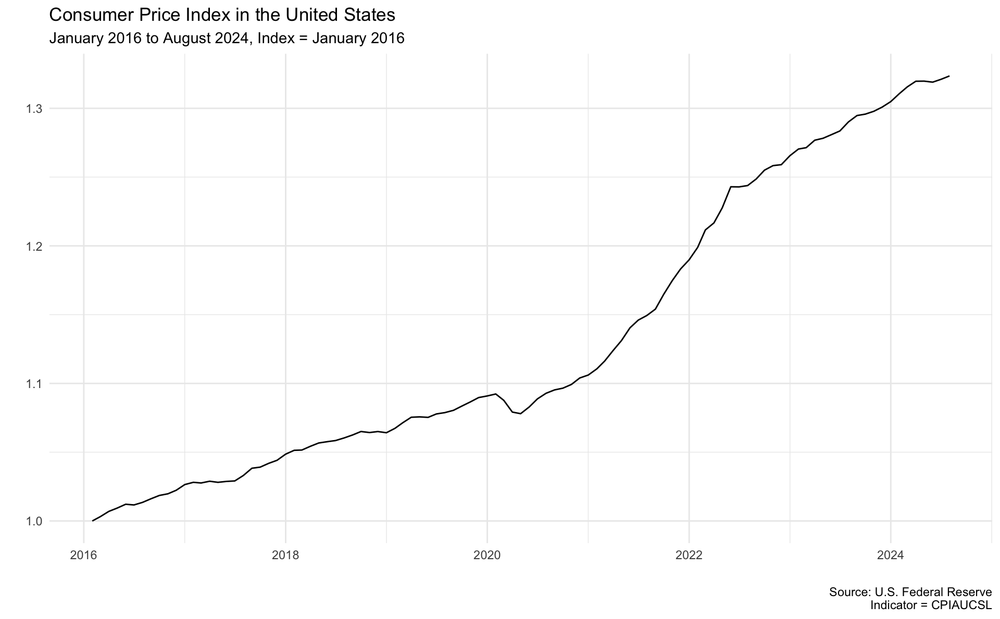
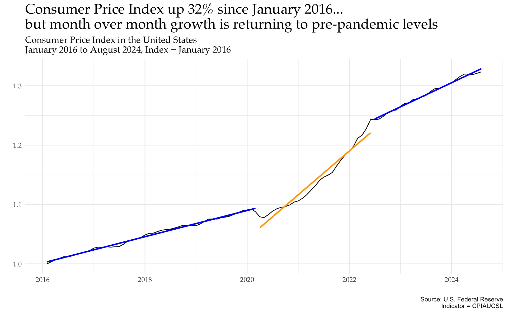

The pandas-datareader package is a powerful tool for easily accessing financial and economic data through various APIs. In this post, we’ll explore how to use it to fetch data from FRED (Federal Reserve Economic Data). Then, I’ll show some visualization techniques using matplotlib, plotnine, and ggplot2.
Setup
First, import the packages:
import pandas as pdfrom matplotlib import pyplot as pltimport pandas_datareader as pdrfrom datetime import datetime
1
If it’s your first time running code with these libraries, you’ll need to first use the pip install command. Since these are already installed for me locally, I can just import.
Next, I’ll set a variable for the time frame that I’d like to use for this demonstration.
start = datetime(2016, 1, 1)end = datetime.now()
Fetching Data from the Federal Reserve
Let’s fetch the US GDP data from Federal Reserve Economic Data (FRED) API:
DATE GDP
0 2016-01-01 18525.933
1 2016-04-01 18711.702
2 2016-07-01 18892.639
3 2016-10-01 19089.379
4 2017-01-01 19280.084
And I’ll show a quick plot with matplotlib. It’s that fast to go from gathering data to creating a viz!
plt.plot(gdp_data['DATE'], gdp_data['GDP'], color='green')plt.suptitle('Monthly Gross Domestic Product for the United States')plt.title('2016-2024')plt.show()

You can grab stock market capitalization data by changing the first argument of the pdr.get_data_fred() function.
With just a few lines of code, we’ve accessed data from the U.S. Federal Reserve. The pandas-datareader package simplifies the process of fetching data, which makes it a great package to get familiar with.
Plotting with plotnine
Because I’m quite comfortable with R’s ggplot syntax, I’ll demonstrate how the plotnine package can visualize your Python data.
from plotnine import ggplot, aes, geom_line, theme_minimal, labs
I’ll fetch Colorado’s unemployment rate during this time period (January 2016 to August 2024).
Fetches the Colorado unemployment rate data using the FRED series ID ‘COUR’.
Resets the index to make the date a regular column for plotting.
Uses plotnine (Python’s implementation of ggplot2), we create a line plot of the unemployment rate over time.
Makes cosmetic adjustments, including adding the minimal theme and appropriate labels.
plotnine’s syntax, similar to R’s ggplot2::, allows for easy customization and layering of plot elements. You can further enhance this plot by adding vertical lines for recession periods, changing color schemes, or adding annotations for significant events.
While this works, it is somewhat clunky. The x-axis is only showing one value, and the figure size can’t be controlled with the code chunk options. I’ll switch over to ggplot2 and make a more polished graphic.
Then, I’ll produce the graphic in ggplot2:: (notice that the x-axis renders better this way).

Analysis of the Consumer Price Index
The Federal Reserve is the resource for gathering all data related to the Consumer Price Index. There are many ways to look at this, including decomposing by the type of good, looking at it over different horizons or localities, and more. For this demo, I’ll just look at the U.S. city average for all urban consumers.1 Again, I’ll use pandas_datareader and pass through some simple arguments to fetch the data.
For this section, I’d like to work in R, so I’ll use reticulate:: to make it an R object.
When you’re working with CPI data, it is common to index the data, or compare recent values to a historical value. I’ll create an indexed_cpi_2016 field, along with a date_seq field to allow some simple linear models.
cpi %>%ggplot(aes(x=DATE,y=indexed_cpi_2016)) +geom_line() +labs(title='Consumer Price Index in the United States',subtitle='January 2016 to August 2024, Index = January 2016',caption='Source: U.S. Federal Reserve\nIndicator = CPIAUCSL',x='',y='') +theme_minimal()

This plot shows a clear rise in the indexed CPI from 2016 to present day. What stands out, too, is that there appear to be some distinct trends (possibly three) – pre-pandemic, pandemic, and post-pandemic. I’d like to extend this mini-analysis to find the slopes of these periods and plot them on the above graphic.
To do so, I’ll create a function and use tidymodels:: to build linear models that I can easily create and compare with one another.
The broom::tidy() function returns a row for each coefficient your model, which I’ll use to compare the slopes of the different periods.
model term estimate
1 Period 1 date_seq 0.001841866
2 Period 2 date_seq 0.006155374
3 Period 3 date_seq 0.003386268
Here’s what this tells us:
Pre-pandemic slope of .002
Pandemic-era slope of .006
Post-pandemic slope of .003
This is also apparent visually, as seen below.
cpi %>%ggplot(aes(x=DATE,y=indexed_cpi_2016)) +geom_line() +geom_smooth(data=. %>%filter(DATE <='2020-03-01'),formula=y~ x,se=FALSE,color='blue',method='lm') +geom_smooth(data=. %>%filter(DATE >'2020-03-01'& DATE <='2022-06-01'),formula=y~ x,se=FALSE,color='orange',method='lm') +geom_smooth(data=. %>%filter(DATE >'2022-06-01'),formula=y~ x,se=FALSE,color='blue',method='lm') +labs(title='Consumer Price Index up 32% since January 2016...\nbut month over month growth is returning to pre-pandemic levels',subtitle='Consumer Price Index in the United States\nJanuary 2016 to August 2024, Index = January 2016',caption='Source: U.S. Federal Reserve\nIndicator = CPIAUCSL',x='',y='') +theme_minimal() +theme(plot.title =element_text(family ='Palatino', size=20),plot.subtitle =element_text(family ='Palatino', size=13),axis.text =element_text(family ='Palatino', size=10))

Indexing off of January 2016, the Consumer Price Index is 32% higher in August 2024. What is interesting in this plot is the distinct trajectories seen pre-pandemic, from roughly 2020-2022, and from 2022 since. This shows that the CPI seems to be returning to its pre-pandemic trajectory.
Conclusion
In this post on Pandas DataReader, I demonstrated:
How to fetch data from the U.S. Federal Reserve using pandas_datareader
How to build basic plots using matplotlib and plotnine
How to convert Python to R objects using reticulate::
How to use tidymodels:: to build some quick regression models and compare results
I’ll be digging into some decomposed CPI data in future posts!
Footnotes
The Federal Reserve website is a great place to comb through to see all the available data (https://fred.stlouisfed.org/).↩︎